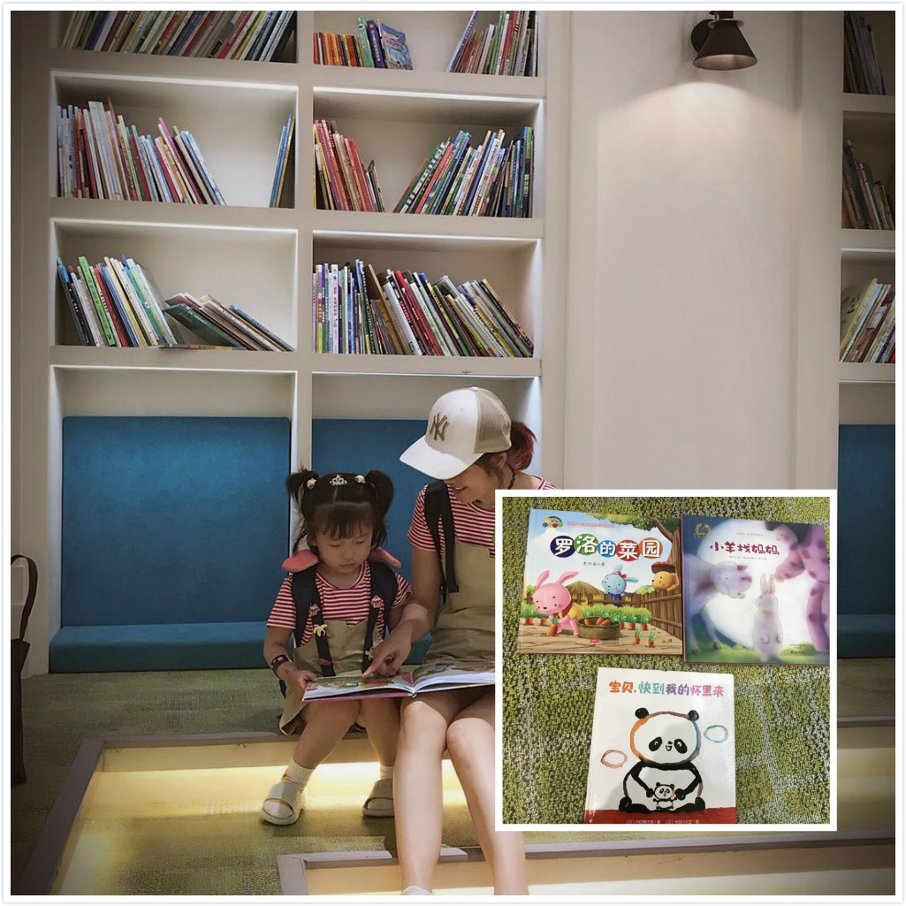
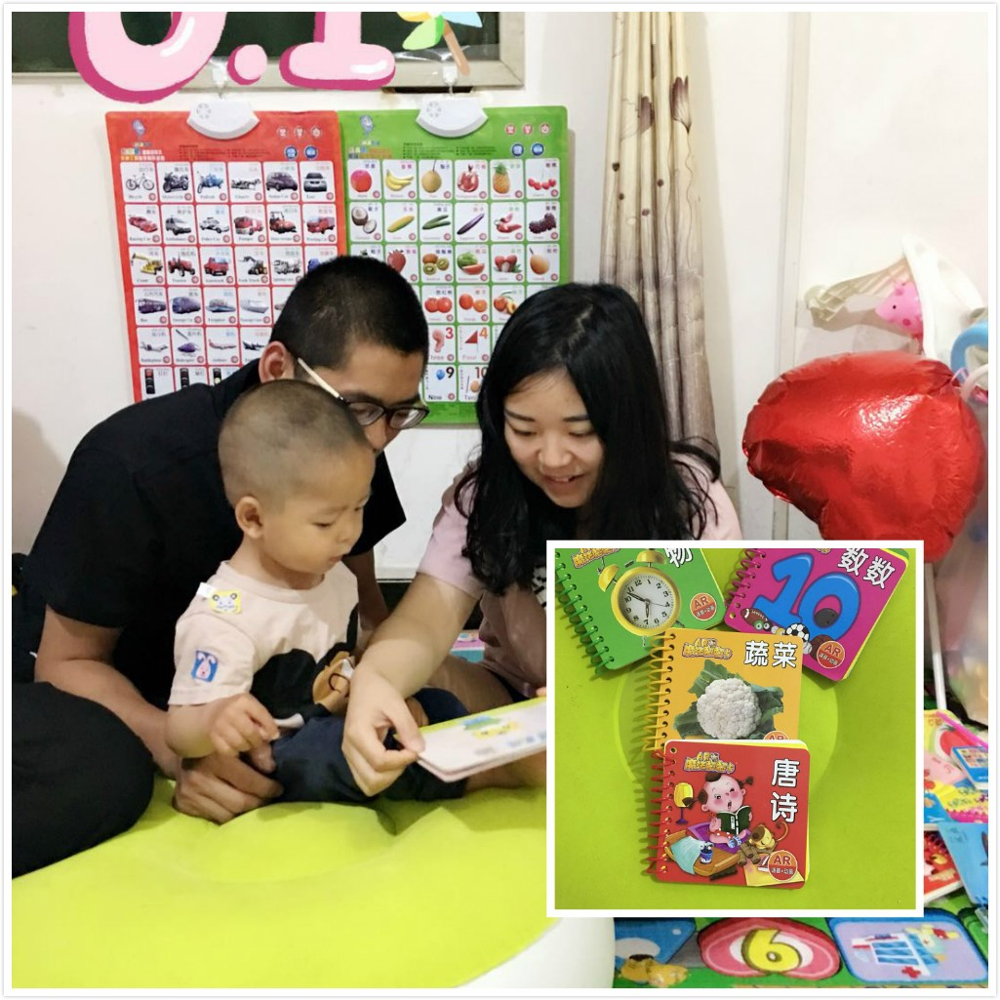

“你或许拥有无限的财富，一箱箱的珠宝与一柜柜的黄金，但你永远不会比我富有——我有一位读书给我听的妈妈。”史斯克兰•吉利兰用诗一样的语言告诉我们亲子阅读的重要性以及给孩子读书的父母在孩子心目中无上的地位。
最好的陪伴是捧一本书与孩子共读，然而很多父母事务繁忙，不仅无暇给予孩子高质量的有效陪伴，就连亲子阅读的时间也被一再压缩，有些家庭甚至完全忽略掉了。2018年“六一儿童节”来临之际，陕西万盛达企业发起“书香之家”亲子读书活动，向公司有孩子的员工们发出倡议：爱要多多陪伴，不做隐形父母。
陕西万盛达给孩子们的礼物
本次活动由公司行政人事部策划，号召大家下班回家后与孩子一同阅读一本书籍，分享三本亲子阅读书目，还为孩子们精心准备了儿童节礼物，并主张职场父母每天抽出一点时间享受亲子阅读时光，做孩子的阅读点灯人，增进与孩子的感情。
活动一出，员工们纷纷点赞响应，大方晒出亲子阅读的照片和书目与大家分享：

王爱玲

肖珊珊
何敏
申洁
王泳媛
张洁
王欣
杨辰
王德权
李扬羊
罗阿红
秦淙
龙冬冬
尹翠
张璇
赵运生
巩晓丽
这世界上任何人的陪伴都不能代替父母的爱，而最好的亲子关系，是与孩子一起阅读和成长。
陕西万盛达企业愿大盆友、小盆友们都能永葆童真，幸福快乐！